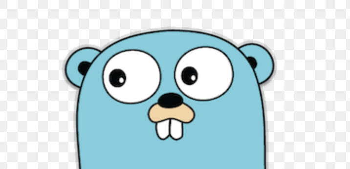

Solid contours, five cyan shades and a clearer gopher face: big white eyes, dark pupils, a button nose, tan muzzle and paired buck teeth. No dotted edges or texture dithering. This is an art revision, not yet ported to Go or approved in a real terminal.

Drag yaw to rotate the entire head, not just the pupils.
JSON frames contain [glyph, foregroundIndex, backgroundIndex] cells, row-major. Index 0 means the terminal default, not a painted rectangle. Loop export: 24 FPS, 288 frames. The procedural rig supports arbitrary poses; exported frames are optional handoff assets.
The default preview draws the encoded quarter-cell blocks directly, avoiding browser-font gaps that can slice pupils and teeth apart. Enable Use font glyphs to compare your browser font. Run node art/mascot-export.mjs --play to check the real ANSI animation in your terminal. No 120 FPS performance claim is made by this art prototype.
Original Go gopher by Renee French, CC BY 4.0; adapted for this study.